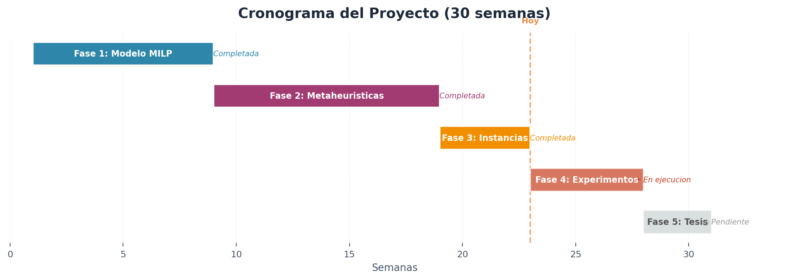
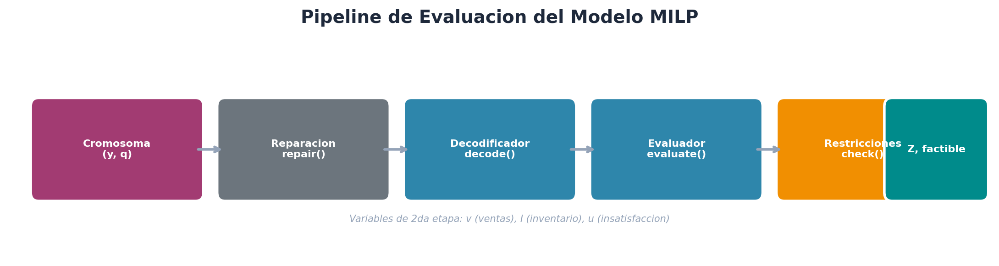
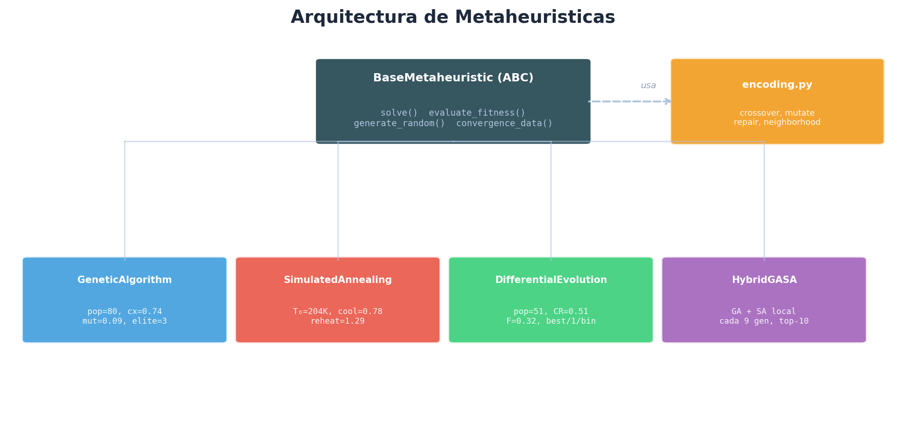
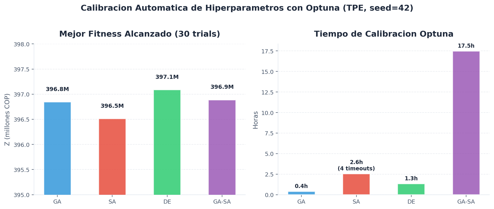
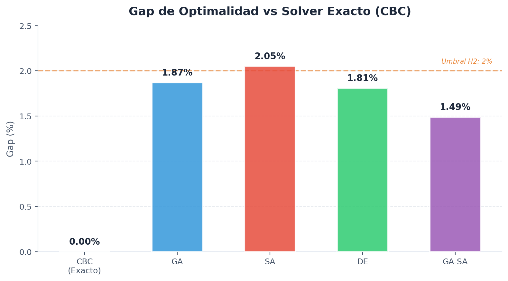
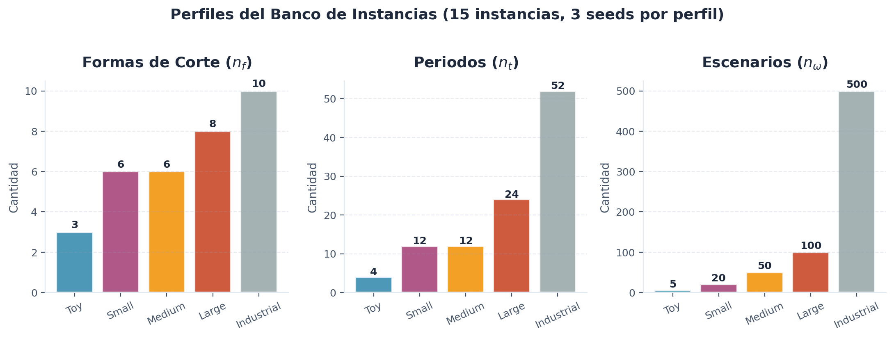
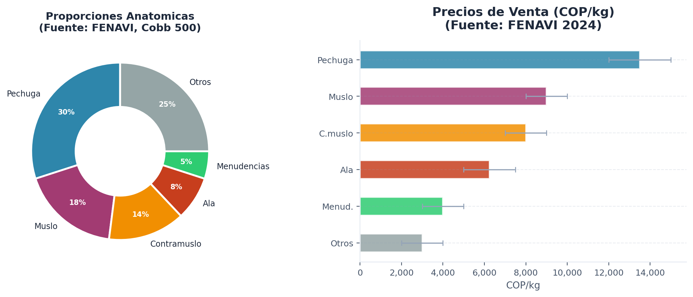
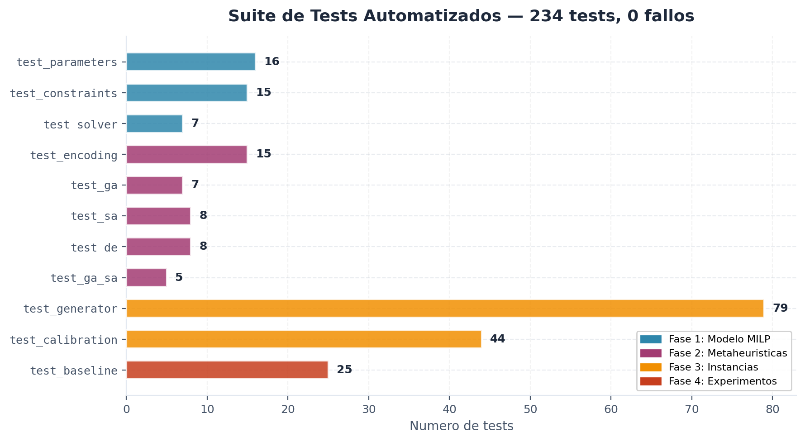

El presente informe documenta el avance del proyecto de investigacion correspondiente a las primeras tres fases de un cronograma de cinco. El trabajo consiste en la formulacion, implementacion computacional y evaluacion de un modelo de programacion lineal entera mixta (MILP) estocastico para la planificacion de la produccion de coproductos avicolas perecibles, complementado por cuatro algoritmos metaheuristicos (GA, SA, DE y un hibrido GA-SA) calibrados para resolver instancias de escala industrial.

| Fase | Alcance | Semanas | Estado |
|---|---|---|---|
| 1 | Formulacion del modelo MILP estocastico | 1–8 | Completada |
| 2 | Diseno e implementacion de metaheuristicas | 9–18 | Completada |
| 3 | Generacion de datos y escenarios de prueba | 19–22 | Completada |
| 4 | Diseno experimental, ejecucion y analisis estadistico | 23–27 | En ejecucion |
| 5 | Validacion, escritura de tesis y sustentacion | 28–30 | Pendiente |
Implementar el modelo MILP estocastico de dos etapas como codigo Python ejecutable y validarlo con el solver CBC, de forma que sirva como (a) evaluador de fitness para las metaheuristicas y (b) baseline exacto para el calculo del gap de optimalidad.
El problema se formula como un lot-sizing estocastico multi-periodo con coproductos perecibles. Las variables de decision se dividen en dos etapas:
La funcion objetivo maximiza el beneficio esperado total (Eq. 1) sujeto a 7 restricciones: balance de material (Eq. 2), satisfaccion de demanda (Eq. 3), capacidad maxima y minima (Eqs. 4-5), limite de ventas (Eq. 6), perecibilidad con descarte total (Eq. 7) y dominios (Eq. 8). La complejidad del problema es NP-hard (Florian 1980, Bitran & Yanasse 1982).

| Modulo | Archivo | Descripcion |
|---|---|---|
| Parametros | src/model/parameters.py | Clase ProblemInstance con carga/exportacion YAML y 15+ validaciones |
| Solucion | src/model/solution.py | Clase Solution + SolutionBreakdown (5 componentes de Z) |
| F. Objetivo | src/model/objective.py | Evaluador vectorizado con numpy.einsum |
| Restricciones | src/model/constraints.py | 7 restricciones (Eqs. 2-8) incluyendo perecibilidad |
| Decodificador | src/model/decoder.py | Greedy FIFO con asignacion por rentabilidad descendente |
| Solver exacto | src/model/solver.py | PuLP/CBC con soporte HiGHS y Gurobi |
constraints.check_all() verifica las 7 restricciones sin violaciones.Tests Fase 1: 38 tests automatizados (16 + 15 + 7), todos aprobados.
Implementar cuatro algoritmos metaheuristicos con interfaz unificada, codificacion compartida y calibracion automatizada de hiperparametros.

BaseMetaheuristic y comparten la codificacion de encoding.py para operadores geneticos y vecindarios.Evolucion poblacional con seleccion por torneo, cruce de dos puntos y mutacion combinada (toggle + perturbacion gaussiana). Incorpora elitismo (top-k preservados) y criterio de parada por estancamiento.
Busqueda de vecindario con criterio de Metropolis, enfriamiento geometrico y mecanismo de recalentamiento. Incluye auto-estimacion de T0 para ~80% de aceptacion inicial.
Mutacion diferencial con estrategias rand/1/bin y best/1/bin, adaptadas a variables mixtas mediante discretizacion. Seleccion greedy: trial reemplaza target solo si su fitness es superior.
Combina la exploracion global del GA con la explotacion local del SA: cada N generaciones se aplica SA como busqueda local a los top-k individuos. Configuracion basada en Akbari-Aghghaleh (2025).
Se utilizo Optuna con el sampler TPE (Tree-Parzen Estimator) para calibrar cada algoritmo, ejecutando 30 trials por algoritmo sobre un conjunto de 5 instancias (3 small + 2 medium), con timeout de 900 s por trial y seed fija (42) para reproducibilidad. Los resultados completos se almacenan en experiments/config/tuning_*.yaml.

| Parametro | Valor calibrado | Descripcion |
|---|---|---|
pop_size | 80 | Tamano de poblacion |
crossover_rate | 0.7437 | Tasa de cruce |
mutation_rate | 0.0889 | Tasa de mutacion |
elitism_count | 3 | Individuos preservados por elitismo |
selection_size | 3 | Tamano del torneo de seleccion |
Mejor fitness: 396,845,202 COP | Trials: 30 (0 errores, 0 timeouts) | Tiempo total: 23.6 min
| Parametro | Valor calibrado | Descripcion |
|---|---|---|
T_initial | 203,952 | Temperatura inicial |
T_final | 586.3 | Temperatura final |
cooling_rate | 0.7817 | Tasa de enfriamiento geometrico |
max_iterations | 27 | Iteraciones por nivel de temperatura |
p_toggle | 0.4941 | Probabilidad de perturbacion toggle |
p_quantity | 0.2825 | Probabilidad de perturbacion de cantidad |
delta | 0.0661 | Magnitud de perturbacion |
reheat_factor | 1.2870 | Factor de recalentamiento |
reheat_threshold | 54 | Iteraciones sin mejora para recalentar |
Mejor fitness: 396,512,715 COP | Trials: 30 (0 errores, 4 timeouts) | Tiempo total: 2.55 h
| Parametro | Valor calibrado | Descripcion |
|---|---|---|
pop_size | 51 | Tamano de poblacion |
CR | 0.5112 | Tasa de cruce binomial |
F | 0.3165 | Factor de escala de mutacion |
strategy | best/1/bin | Estrategia de mutacion diferencial |
Mejor fitness: 397,086,621 COP | Trials: 30 (0 errores, 0 timeouts) | Tiempo total: 1.33 h
| Parametro | Valor calibrado | Descripcion |
|---|---|---|
pop_size | 39 | Tamano de poblacion del GA |
crossover_rate | 0.8589 | Tasa de cruce |
mutation_rate | 0.0505 | Tasa de mutacion |
elitism_count | 1 | Individuos preservados |
selection_size | 3 | Tamano del torneo |
local_search_freq | 9 | Frecuencia de busqueda local SA (cada N gen.) |
local_search_top_k | 10 | Top-k individuos para SA local |
local_search_iters | 26 | Iteraciones del SA local |
local_search_T | 3,226.6 | Temperatura del SA local |
local_search_cooling | 0.7126 | Enfriamiento del SA local |
Mejor fitness: 396,887,162 COP | Trials: 30 (0 errores, 0 timeouts) | Tiempo total: 17.5 h

| Algoritmo | Gap vs Exacto | Factible |
|---|---|---|
| CBC (Exacto) | 0.00% | Si |
| GA | 1.87% | Si |
| SA | 2.05% | Si |
| DE | 1.81% | Si |
| GA-SA | 1.49% | Si |
Tests Fase 2: 43 tests automatizados (15 + 7 + 8 + 8 + 5), todos aprobados.
Crear un generador de instancias sinteticas calibradas contra parametros de la industria avicola colombiana, y producir un banco de 15 instancias para la fase experimental.

| Perfil | nf | nt | nω | Seeds | Solver CBC |
|---|---|---|---|---|---|
| Toy | 3 | 4 | 5 | 42, 123, 456 | Optimo (< 0.3 s) |
| Small | 6 | 12 | 20 | 42, 123, 456 | Optimo (< 2.8 s) |
| Medium | 6 | 12 | 50 | 42, 123, 456 | — |
| Large | 8 | 24 | 100 | 42, 123, 456 | — |
| Industrial | 10 | 52 | 500 | 42, 123, 456 | — |
Total: 15 instancias YAML, 22.8 MB. Soluciones optimas conocidas: Toy Z* ∈ [269M, 283M] COP, Small Z* ∈ [571M, 578M] COP.

| Parametro | Rango | Fuente |
|---|---|---|
| Proporciones anatomicas | Pechuga 30%, Muslo 18%, Ala 8%, ... | FENAVI, Cobb 500 |
| Precios de venta (COP/kg) | 5,000 – 15,000 | FENAVI 2024 |
| Costo de procesamiento | 1,500 – 2,500 COP/carcasa | Solano-Blanco (2022) |
| Costo de setup | 500,000 – 1,500,000 COP/periodo | Referencia industrial |
| Capacidad maxima | 5,000 – 20,000 carcasas/periodo | Plantas medianas Colombia |
| Vida util (refrigerado) | 4 – 7 dias | NTC 3644-2, Codex Alimentarius |
test_calibration.py — 44 tests)Los datos de calibracion industrial se validan automaticamente con 44 tests agrupados en 3 categorias:
| Test | Verifica |
|---|---|
test_anatomical_proportions_sum_one | sum(alpha) == 1.0 exacto |
test_anatomical_proportions_all_positive | Todas las proporciones > 0 |
test_prices_min_less_than_max | min < max en todos los rangos de precios |
test_prices_default_in_range | Precio default entre min y max |
test_costs_min_less_than_max | min < max en costos |
test_costs_default_in_range | Costo default entre min y max |
test_inv_cost_less_than_all_prices | cost_inv < precio minimo (coherencia economica) |
test_capacity_q_min_less_than_q_max | Qmin < Qmax |
test_shelf_life_positive | Vida util default > 0 |
test_shelf_life_min_less_than_max | min ≤ max en vida util |
test_weight_positive | Peso default > 0 |
test_weight_range | Peso en rango razonable (1-5 kg) |
test_validate_calibration_data_passes | validate_calibration_data() sin errores |
calibrate_instance() (20 tests, 5 perfiles x 4 propiedades)| Test | Verifica |
|---|---|
test_calibrated_instance_valid | Instancia calibrada pasa validate() (5 perfiles) |
test_calibrate_preserves_demand | Calibracion no modifica demanda original |
test_calibrate_preserves_structure | No modifica n_f, n_t, n_w |
test_calibrate_does_not_mutate_original | Instancia original no se muta (deep copy) |
test_calibrate_applies_overrides | Overrides personalizados se aplican |
test_calibrate_applies_defaults | Sin overrides usa defaults de COST_REFERENCE |
test_calibrate_large_uses_large_capacity | Perfil large usa CAPACITY_REFERENCE['large'] |
test_calibrate_invalid_source | Fuente invalida lanza ValueError |
test_all_profiles_calibrate | Los 5 perfiles se calibran sin errores |
test_calibrated_costs_less_than_prices | cost_inv < prices despues de calibrar |
| Test | Verifica |
|---|---|
test_correlation_shape | Dimension n x n correcta |
test_correlation_symmetric | Matriz simetrica |
test_correlation_diagonal_one | Diagonal = 1.0 (correlacion consigo mismo) |
test_correlation_positive_definite | Todos los eigenvalores > 0 (valida para Cholesky) |
test_correlation_various_sizes | Funciona para n = 3, 6, 8, 10 |
Tests Fase 3 (total): 123 tests automatizados (test_generator: 79 + test_calibration: 44), todos aprobados.

| Indicador | Valor |
|---|---|
Modulos fuente en src/ | 15 |
| Lineas de codigo fuente | ~3,180 |
| Tests automatizados | 234 (0 fallos) |
| Instancias generadas | 15 archivos YAML (22.8 MB) |
| Configuraciones de calibracion | 4 archivos YAML |
| Documentos tecnicos | 9 archivos Markdown |
Los scripts de ejecucion y analisis estan implementados. El experimento comparativo (1,620 ejecuciones: 6 algoritmos × 9 instancias × 30 replicas) se encuentra en ejecucion activa. Los entregables incluyen:
v1.0.0-thesis.Daniel Andres Castaneda Rodriguez
Maestria en Investigacion Operativa y Estadistica
Universidad Tecnologica de Pereira
Marzo de 2026